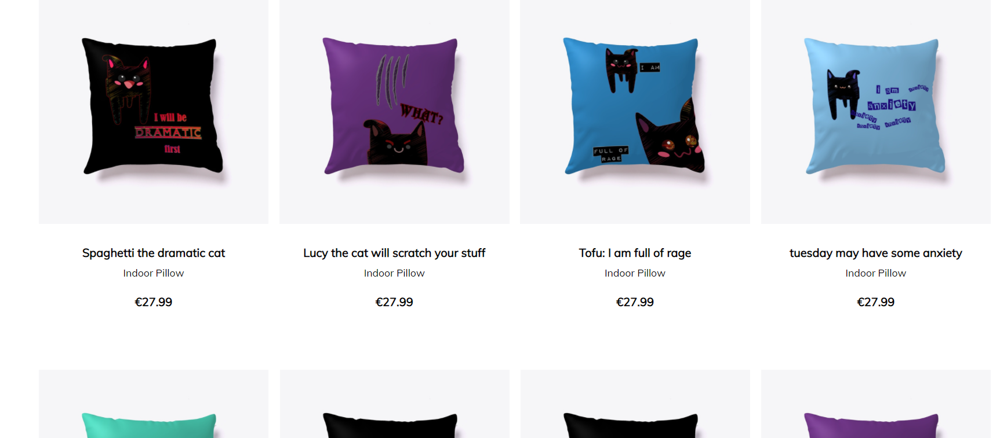
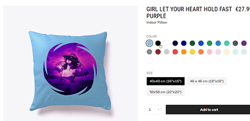
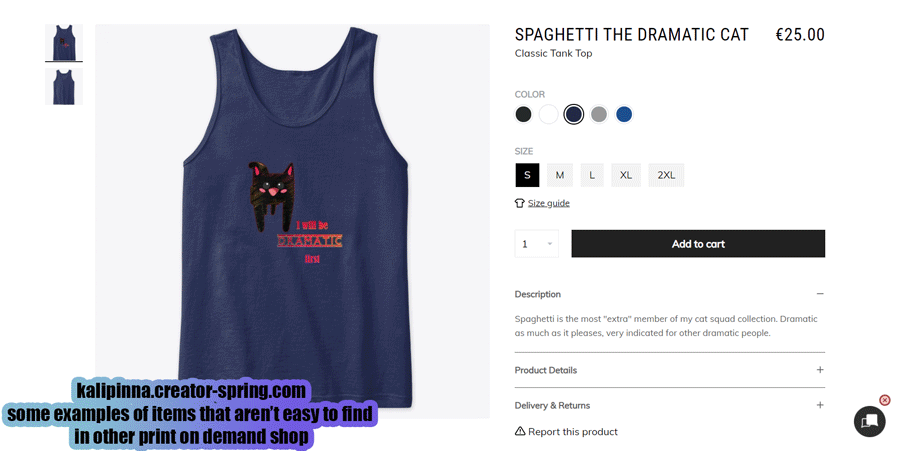
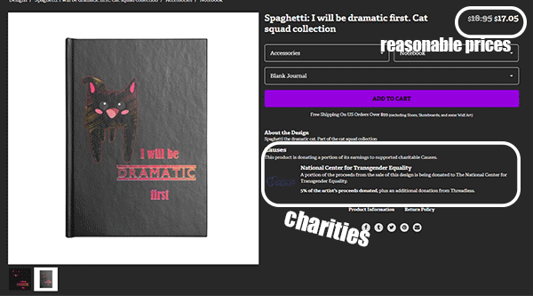

Redbubble è dove puoi trovare tutte le mie piccole creazioni, che sono aggiunte/verranno aggiunte negli altri negozi in seguito
Qui guardare un breve video con il mio negozio registrato oggi (7 settembre) per dare un'occhiata alla visualizzazione predefinita di molti prodotti diversi, vedere come alcuni abbiano già copie in diversi colori o con motivi/pattern - e come
si possono filtrare i risultati in base al prodotto cercato, in questo caso un vestito. Il punto è: più di 80 prodotti per ogni design, cartelle per trovare le collezioni, e tanto altro!
purtroppo Redbubble offre soltanto un colore di sfondo per la maggior parte degli oggetti, quindi cosa puoi fare se vuoi sapere come un design apparirebbe su sfondi verdi, rossi, gialli, blu, e scegliere il tuo preferito? allora
puoi andare sul mio negozietto teespring e nelle prime file troverai un cuscino per ogni design che ho fatto (dopodichè altri prodotti che ho già aggiunto)

clicca su uno di loro ed ecco tante opzioni! Scopri se c'è una combinazione di colori che ti piace:

e mandami una bubblemail su redbubble o un messaggio tramite uno dei miei social se preferisci, e se si può fare sarò felicissima di aggiungere la tua scelta nel colore che preferisci! (Dovrò fare l'upload e creare un "nuovo" prodotto,
per questo lo faccio su richiesta, e ti farò sapere quando è pronto). Non deve per forza essere redbubble: vorresti invece un copricollo su threadless? Chiedi e arriverà!
Può essere anche un semplicissimo "Ciao, vorrei una borsa con il tuo "Spaghetti: I will be dramatic" su sfondo rosso nel tuo negozio di redbubble".
Piccola nota che il risultato finale dipenderà dalle stampanti del negozio, io faccio soltanto le immagini!
Volete un colore più specifico come#1564db blu per il vostro sfondo? Potete cercare gli "hex code" su google o cliccare qui
e usare le freccette accanto a 'rgb' finchè non compare hex, poi copiare il codice che si vuole.
in questo momento, a parte i cuscini che erano necessari per offrire opzioni di colori di sfondo, alcuni design hanno già molti prodotti disponibili. L'unico punto negativo del sito teespring è che è molto lento nell'accettare modifiche, quindi mi
ci vorrà tanto tempo per copiare tutto, e la maggior parte degli oggetti possono solo avere designs con sfondo trasparente come i gatti delle gif precedenti. Se c'è qualcosa che avete visto su redbubble e vorreste compare specificatamente qui ditemelo
e gli darò priorità! Ci sono tanti prodotti interessanti, come asciugamani da spiaggia, bottiglie, cappelli...

Sto già aggiungendo prodotti su threadless, ci sono oggetti speciali difficili da trovare altrove come borse-weekend che possono essere personalizzate dappertutto (e qui aggiungo spesso colori sfumati) + come ho detto è possibile donare a diverse
beneficienze tra le opzioni che offrono alla threadless, e io le sto scegliendo a caso, senza particolari collegamenti a ciò che si trova nelle immagini, perchè voglio beccarle tutte! Come sempre, se c'è qualche design che vorreste vedere lì più
in fretta, chiedete e avrà priorità!

codici sconto e saldi:
redbubble:
SHOPTEMBER codice per 20% di sconto su tutto. Fino al 9 settembre.
teespring:
KALISEPT è il codice per il 10% di sconto fino al 30 settembre.
threadless:
$15 t-shirt e per il resto ci sono i saldi fino al 9 settembre.
Presto tutti i miei negozi offriranno tutti i prodotti possibili, così potrai scegliere qualsiasi cosa ovunque, e nel frattempo... scegli i tuoi colori! E prendi un bel vestito su redbubble, una borsa weekend su threadless, o pantaloncini su teespring!